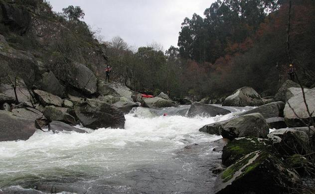
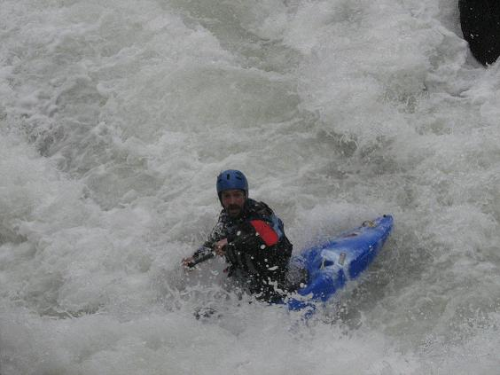

Rio Tamega - Extreme Fred - Little Christmas
‘La indecisión es la llave a la
flexibilidad’
|
|
Rio Tamega - Extreme Fred - Little Christmas |
||
|---|---|---|---|---|
|
‘La indecisión es la llave a la
flexibilidad’ |
Extreme Fred
Remember earlier how we spoke about the return of Mr. Fred and we showed you a picture of Regular Fred and mentioned how he had two settings?
Well, after building up a sufficient head of steam, like mild-mannered Bill Bixby turning into the Incredible Hulk, here's Extreme Fred bursting upon the Tamega, ripping up the flat water:
Tamega
After all the low-water runs of previous days, we changed style for a while to run the big volume Tamega outside Mondim do Basto. All rivers in Portugal are either five minutes away from where you are or they are one hour away. This is very a convenient rule-of-thumb, but has the disadvantage of only being true most of the time.
An hour into the run, or perhaps only five minutes, Rob scopes out the line...
Pedro (a different Pedro from the last guy) plugs down the centre line on the right of the same drop, with only a paddle tip showing...

There's another untruth to which you, the reader, have been subject. Mr. Fred really has three settings, not two. Here's Extreme Fred TO THE MAX!:
Now I understand why Pedro has the tip of his paddle painted red - it's so you can find him buried in the pile...
Finally, he emerges, gasping for air...

Mahoney working the magic...
Jim doing his thing...
Rabi�o went back up three times to run this section. Slalom paddlers and their endless quest for perfection, eh?
Catherine eyes up the big crashing pillow-wave that caught out everyone...

The big crashing pillow-wave that caught out everyone eyes up Catherine...
Following her encounter with the big crashing pillow-wave that caught out everyone, Catherine comes away with a split lip and and a broken set of paddles, but thankfully didn't go in the undercut on the right.
There were some excellent sections on the Tamega that required 'joined-up' thinking to link a few drops and to stay out of the nasty sieves at the edges. There were some eddies into which you didn't want to go, but they were fairly simple to avoid.
Debriefing at the takeout...

Little Christmas
Every night in Mondim, no matter where we went, bar or restuarant, we were followed around by these carol singers celebrating 'Little Christmas.'
They have a funny little song that gets in your head and you find yourself humming it all the live-long day on the river. As far as we could figure out, they are celebrating the arrival of the wise men to Bethlehem.